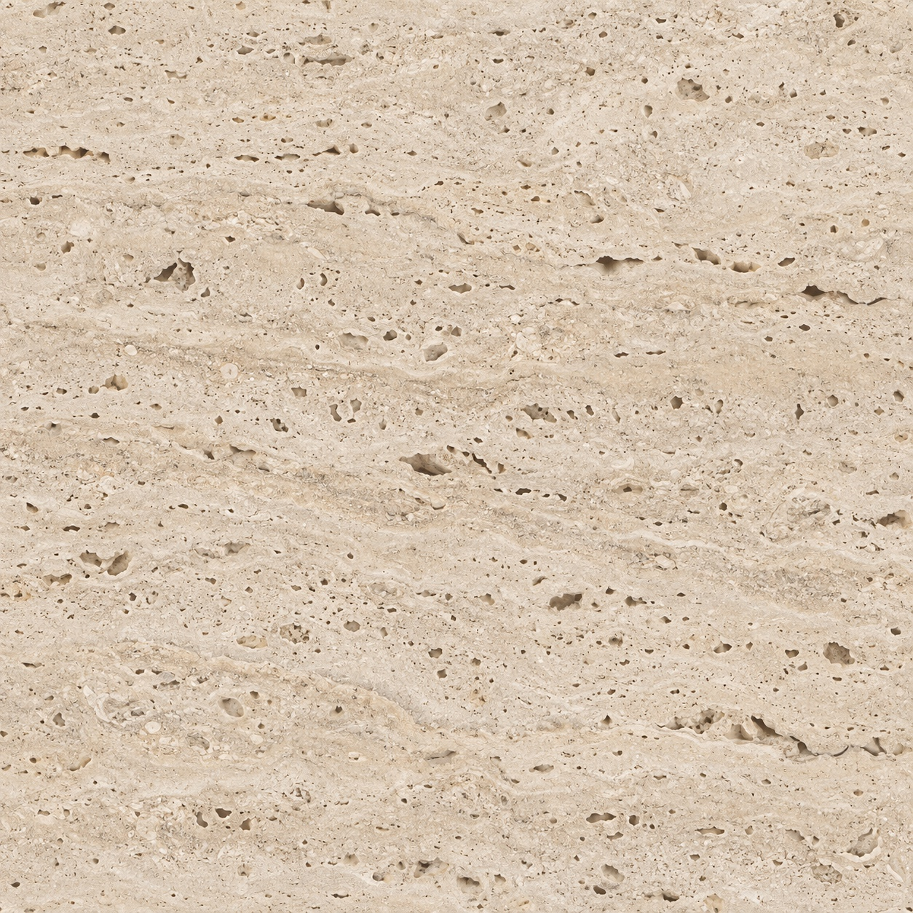
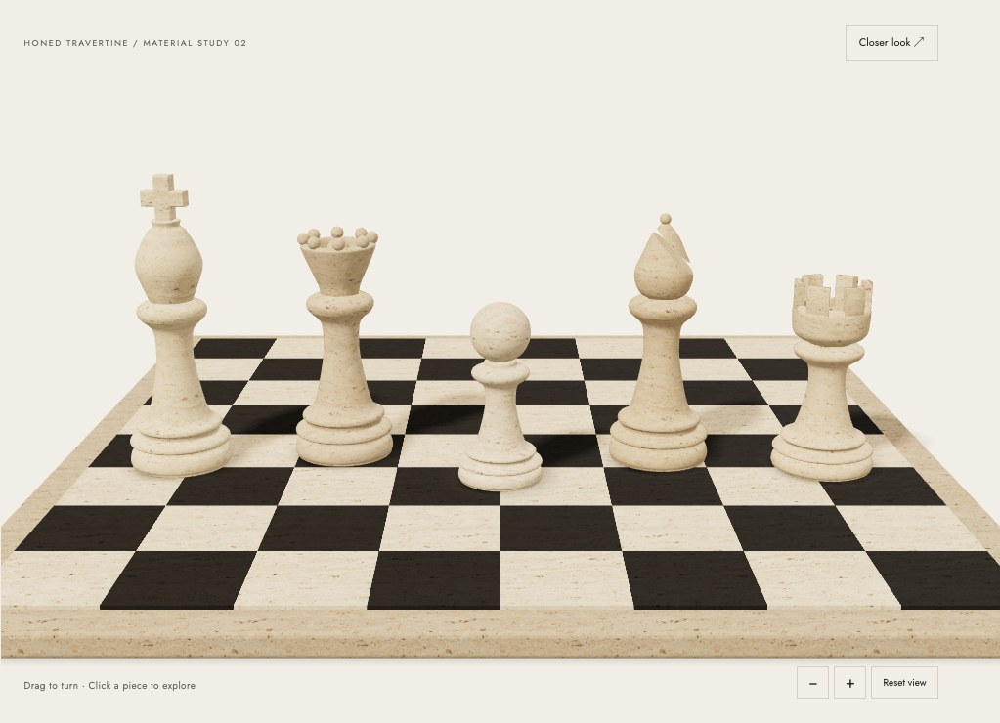

The opening collectionEvery move,
Every move,
tailored.
Five pieces. A world of possibilities.
Choose yours and make your first move.

02 / Honed travertineNatural pores · Softened edges

Honed travertine / Material study 02
Preparing the pieces…
Drag to turn · Click a piece to explore